In the news...
Teaching folks to program 2019, a.k.a. in the search of an ideal program: Sequence
2020-02-12 00:00

In this article Michael shares his thoughts on teaching folks to program in 2019.
Preface
Autumn 2019 was the third time I participated as one of the teachers in the course to teach 10-15-year-old folks to program. The course took place from mid. September to mid. December. Each Saturday, we were studying from 10 AM to 12 PM. More details about the structure of each class and the game itself can be found in the 2018 article.
I have the following goals for conducting such courses:
- create a convenient tool to allow the creation of simple games, the tool interested folks of 10 years old or older can master;
- create a program to teach programming, the program interested folks of 10 years old or older can use themselves to create simple games.
Game
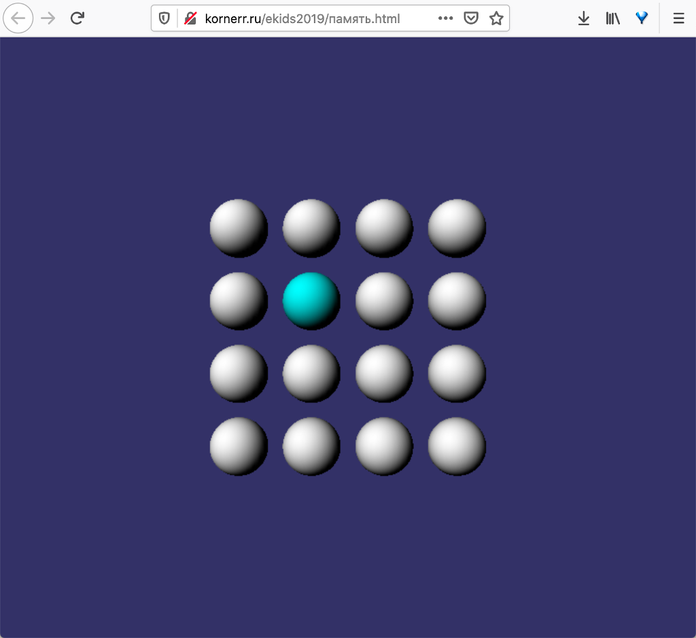
Memory is a simple game we create during the course. The goal of Memory is to find matching items on a playing field. More details, including game mechanics, can be found in the 2018 article. You can play the created game in a web browser by clicking this link.
Tool
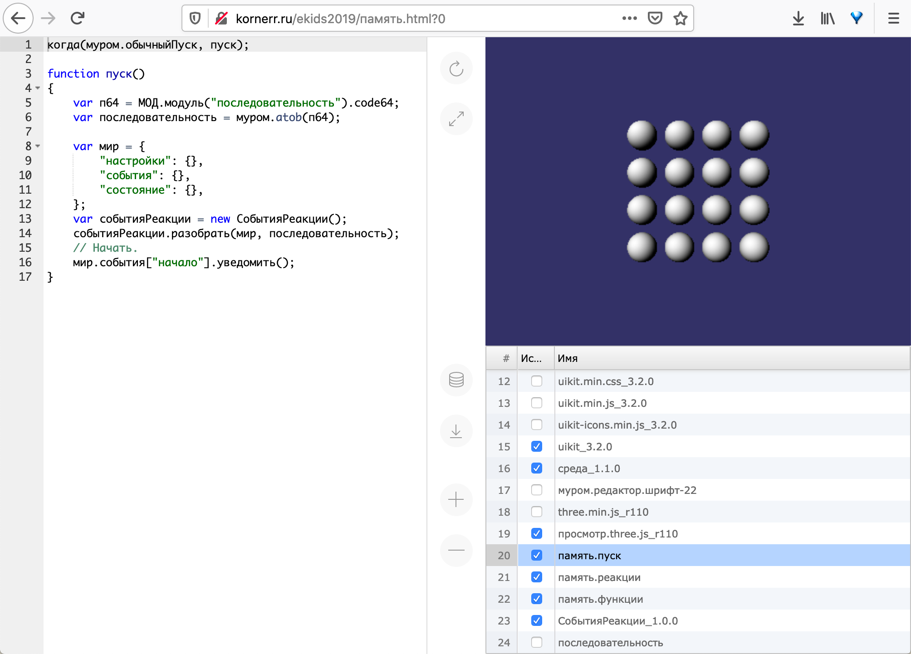
When I was creating the tool, my guiding principle was unpretentiousness that manifests itself in the following:
- work under any operating system
- development can be conducted under Linux, macOS, or Windows
- one can play the game on a PC, a tablet, or a smartphone
- no need to configure anything: just open the link in a web browser and start working
- no need for the Internet: work locally if you want, there's no back-end
- the game is available to everyone
- if you place a file on GitHub Pages, just share the link
- if you send the file over Skype, just open the file locally
The tool is an integrated development environment (IDE) that is technically a single HTML file. This single file contains both IDE and a project under development (Memory game in our case). The tool looks pretty standard:
- left area depicts the code of a selected module;
- middle area contains buttons to restart, save the project and manage modules;
- top right area contains result;
- bottom right area lists modules belonging to both IDE and the project.
Since we only have a single HTML file, we should be able to run it in two modes:
- replay
- default mode;
- just open the file;
- editing
- append
?0symbols in the address bar.
- append
Web browser cache (IndexedDB) is used to keep changes temporarily. To save changes permanently, one has to download the file with the changes by clicking the corresponding button in the middle area.
The first classes
I prepared 80 lines of JavaScript code for the first class and printed the code on paper. Each student received the paper and had to type the code into the tool. The typing exercise had the following goals:
- find out the typing speed of students;
- demonstrate API of the tool.
The typing speed turned out to be extremely low: ranging from 14 symbols per minute (a student managed to type only half of the code) to 39 symbols per minute. Since I used to type the code with the speed of 213 symbols per minute, I was shocked by the results and started to doubt we would be able to write the game in an hour by the end of the course.
We spent the second class to find typos in the code. I met typos that I have never seen in my life. I was shocked again: students had a hard time finding the typos even with the correct code on the paper in front of them. It's hard to imagine what would happen to the students' psyche if we were to pass a brutal UX/UI test with questions like this:
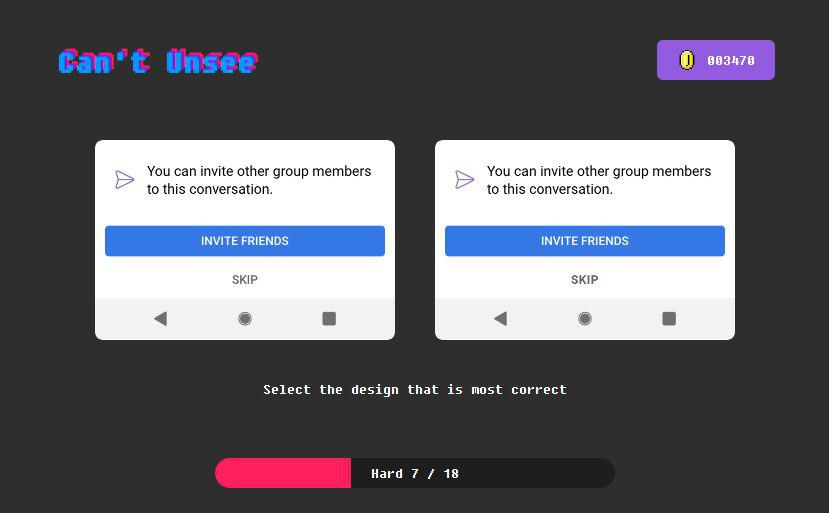
Later I tried to decrease the code down to 10 lines, offered partially completed code so that students could find and fix errors. Nothing helped: students just couldn't comprehend anything as if they saw hieroglyphs instead of familiar letters.
Successful seventh class
The half of the course was over, and I haven't moved an inch. In another attempt to find a way to explain the code I rewrote the game one more time. Now with a module of an intriguing title последовательность (sequence in Russian).
To my surprise, the class had a stunning success: we got everything done before "the bell rang", and the students were burning with enthusiasm. The burning was so strong that we finished the class with a spontaneous brainstorm session where we came up with functionality to make the newly appeared game even better:
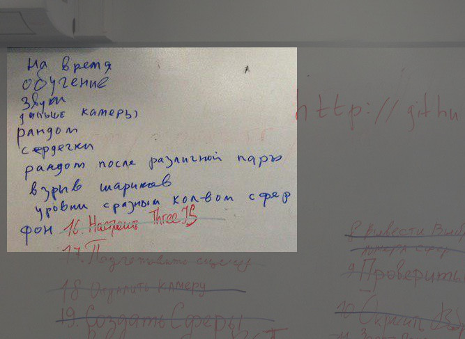
The lines in Russian read:
- timer;
- tutorial;
- sounds;
- the camera should be farther;
- randomize;
- hearts (meaning lives);
- randomize after a failed matching attempt;
- exploding spheres;
- levels with different number of spheres;
- background.
Let's look closer into the class.
Board
Previous classes were using "teachers work with each student individually" approach. After six classes we (two teachers) realized that diving into each student's specific typos/errors takes more time than teaching anything new.
Starting with the seventh class, we decided to hook everyone to the board, i.e., the board became a central place where all of us were working, a place for everyone to stand up, approach the board and write there. PCs became secondary, a place for students to copy the board contents to. This practice clearly indicated school boards exist for many reasons:
- every student is accustomed to receiving information from the board; students know what to observe;
- teacher's environment is at the board; it's now possible to explain single new item to everyone without diving into individual errors;
- fixing individual errors becomes faster because most of them stem from negligence, i.e., typos made while copying the board contents.
I'd like to highlight the fact that teachers work at the board together with students: a teacher sets direction; however, students stand up and come to the board themselves, write answers to the teacher's questions themselves. The benefits of such an approach are the following:
- students write with their own hands, i.e., they come up with a solution and implement it themselves, a teacher does not write for them;
- students stand up and come to the board, i.e., they move, which is good for health and drains unbridled energy that usually hampers discipline;
- students have to remember the code to copy it to the board;
- teachers have an opportunity to evaluate students' observation skills by seeing how easy (or hard) it is for them to remember and write the code on the board.
Sequence
последовательность module of the game looks like this:
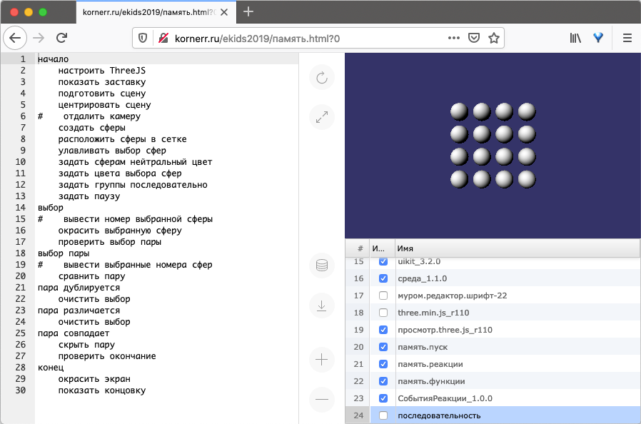
The sequence allows to write an algorithm in the form of events and reactions:
- events (
начало(start),выбор(selection), etc.) are lines without indentation; - reactions (
настроить ThreeJS(configure ThreeJS),показать заставку(show splash screen), etc.) are lines with indentation to signify their relation to events.
Thus, when starting the game (начало event) we configure ThreeJS (настроить ThreeJS reaction), show splash screen (показать заставку reaction), and so on.
The class had almost an empty последовательность module in the beginning; only events were present:
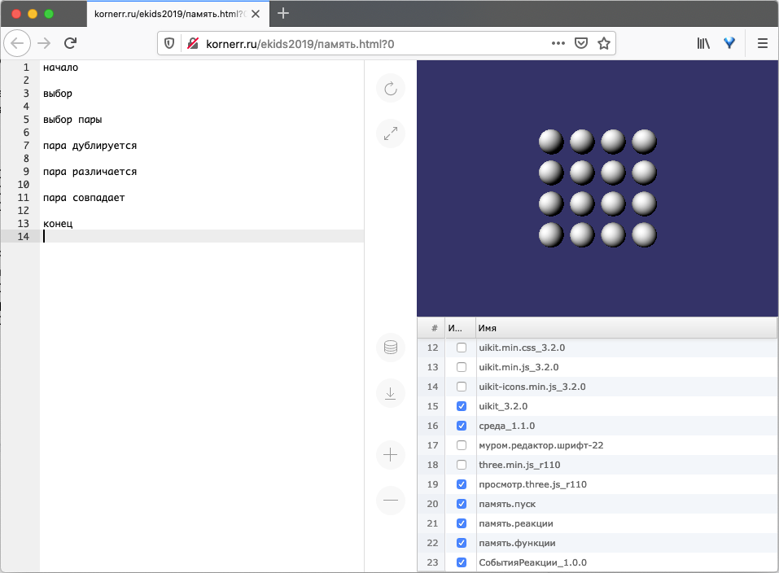
I have duplicated these same events onto the board, leaving free space to add reactions later during the class (I used GIMP to depict free space in the following image):
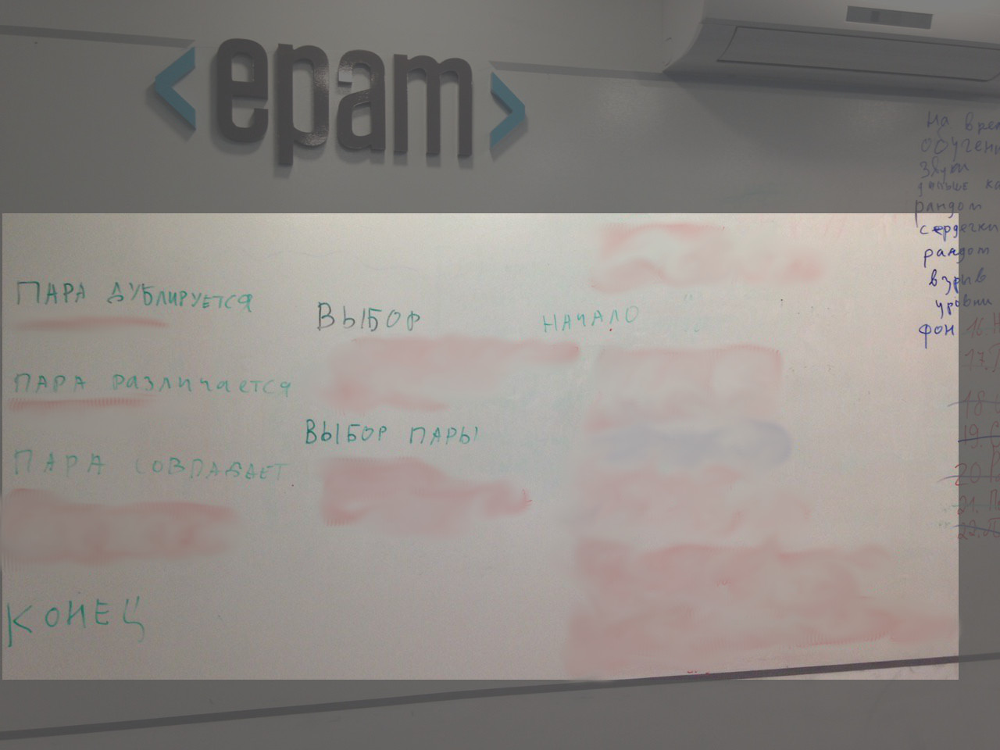
We were searching for reactions in память.реакции module (memory.reactions):
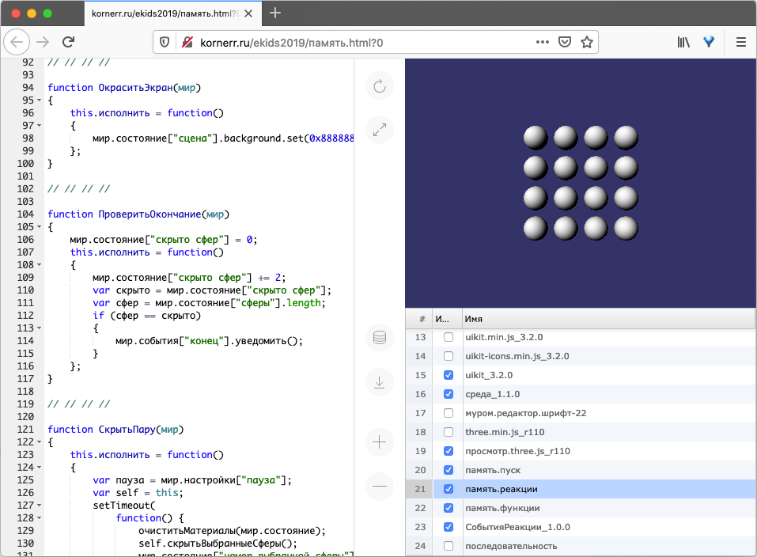
Each reaction of последовательность module is represented in память.реакции module by constructor functions. For example, проверить окончание reaction (check for ending) has a uniquely corresponding ПроверитьОкончание function (CheckForEnding):
function ПроверитьОкончание(мир) // 1.
{
мир.состояние["скрыто сфер"] = 0; // 2.
this.исполнить = function() // 3.
{
мир.состояние["скрыто сфер"] += 2; // 4.
var скрыто = мир.состояние["скрыто сфер"]; // 5.
var сфер = мир.состояние["сферы"].length; // 6.
if (сфер == скрыто) // 7.
{
мир.события["конец"].уведомить(); // 8.
}
};
}
The same code in English would look like this:
function CheckForEnding(world) // 1.
{
world.state["spheres hidden"] = 0; // 2.
this.run = function() // 3.
{
world.state["spheres hidden"] += 2; // 4.
var hidden = world.state["spheres hidden"]; // 5.
var spheres = world.state["spheres"].length; // 6.
if (spheres == hidden) // 7.
{
world.events["ending"].report(); // 8.
}
};
}
Let's look closer:
- The function accepts
world(dictionary) that is used by functions to communicate with each other.worldconsists of three regions (dictionary keys):statecontains variable data used for communication;settingscontain constants to configure functions;eventscontain publishers to be able to subscribe functions to events.
- An instance of this constructor function is created with
newoperator while parsingпоследовательностьmodule. Practically, everything outside ofrunmethod is considered to be part of the constructor body. In our case, we createspheres hiddenvariable to count hidden spheres. runmethod is executed each time an event is reported.- Since
check for endingreaction is executed each time a user hides a pair of spheres, we increasespheres hiddencounter by2. - Just a shorter alias for
spheres hiddencounter. - Count the number of spheres at the playing field.
- Compare the number of spheres at the playing field with the number of hidden spheres.
- Report
endingevent if they are equal, i.e., if all spheres were hidden.
Students took turns searching for functions in память.реакции module:
- a student looks for a function in the module (to simplify the process, I've split the functions with
// // // //symbols); - once a function is located, the student speaks the name of the function out loud and comes to the board;
- the student writes the name down on the board to the list of found functions (students may use any means to remember the names except teacher's hints).
Such an exercise also highlights who's actively tracking the functions and who's unable to find the next function when it's their turn.
Once the names of all functions have been written on the board, we were mapping reactions (functions) to events in a similar fashion:
- a teacher asks, for example, which of the listed functions is suitable for event
начало - if a student answers correctly, the student
- comes to the board
- writes the reaction under the related event
- crosses corresponding function out of the listed functions
Once we have a more-or-less working set of reactions for an event it's time to transfer them from the board to student PCs. That way we managed to fill the board with reactions both on the board:
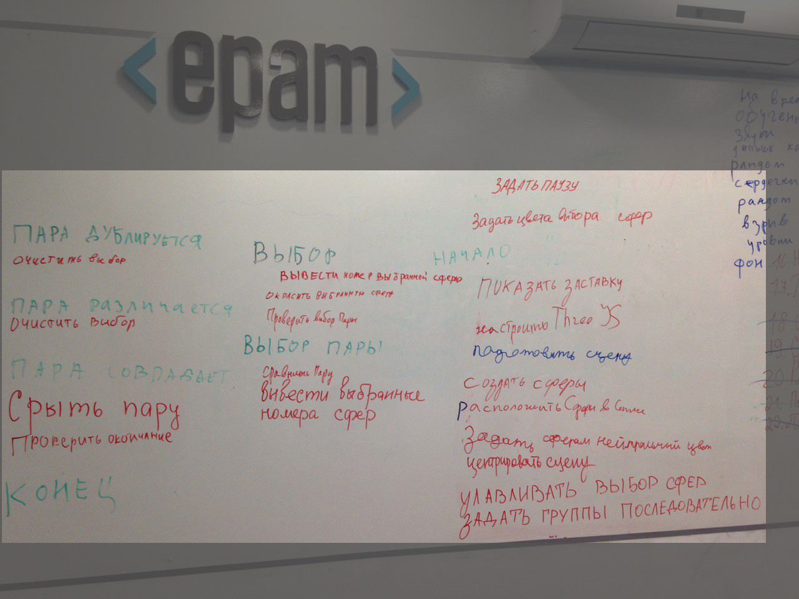 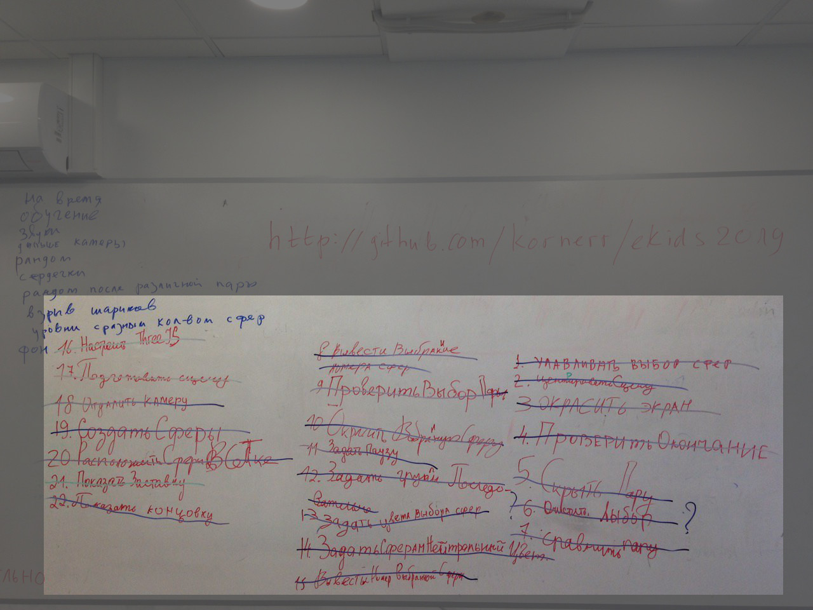
and in the tool:
The following classes
During the following classes, we were trying to create a new reaction and a corresponding constructor function. First, I tried to put a solution into heads quickly (providing complete lines of code); however, that didn't work. That's why we ended up with learning the following code, which took us several classes:
var кот = "9";
console.log(кот);
Unfortunately, these two lines of code were hard to explain: students were confused with the concept of variables and their values. This wasn't the only problem: the new function required the use of an array, which I failed to explain at all. There's a long road ahead of me before I'm able to explain variables and arrays to students.
Of course, by the end of the course we managed to complete the new function, however, I haven't seen understanding and subsequent faith in themselves, which usually manifests itself with a burning enthusiasm we saw in the seventh class.
The last class
The last class was not using the famous greeting circle at the beginning. Instead, I asked everyone (including myself) to tell what was good (+) and what was bad (-) during the course. Here's the table I got:
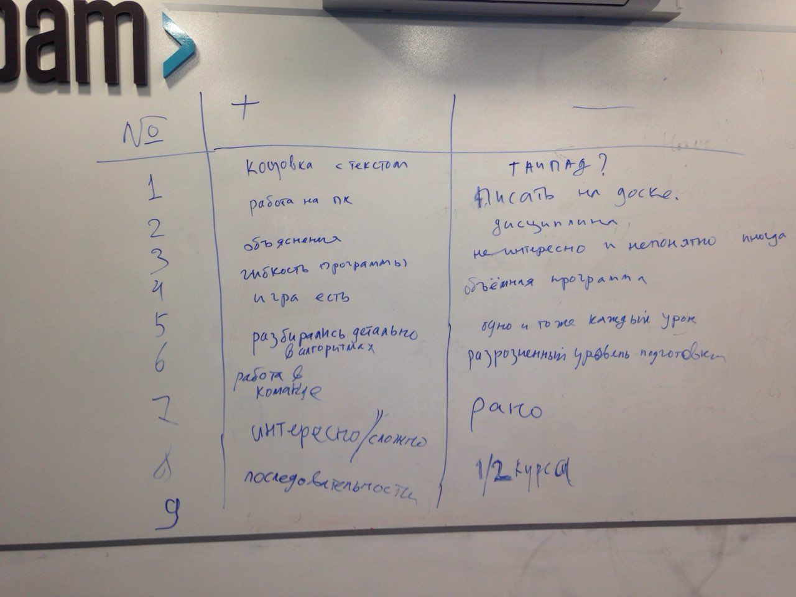
The same table in English would look like this:
| № | + | - |
|---|---|---|
| 1 | Personalized ending screen | Touchpad? |
| 2 | Working on PC | Writing on the board |
| 3 | Explanation | Discipline |
| 4 | Flexible learning program | Sometimes unclear and uninteresting |
| 5 | There's a finished game | Learning program is too big |
| 6 | A detailed explanation of algorithms | Doing the same thing each time |
| 7 | Teamwork | Students of disparate skill level |
| 8 | Interesting / Difficult | Too early |
| 9 | Sequence | Half of the course |
Surprisingly enough, the folks didn't like to write on the board even though it greatly increased the efficiency of teaching. On the one hand, the "learning program was too big", on the other hand, we were "doing the same thing each time", i.e. repeating what we have learned before.
We were saving the game to GitHub from time to time. This was difficult, too: we were spending half an hour while students were authenticating. As always, nobody remembered their passwords (each time), others had to verify it's really them accessing GitHub account on a new device, which required access to e-mail, which sometimes belonged to parents (the folks had to call their parents).
Nonetheless, each student had its own version of the game by the end of the course with personalized beginning and ending screens:
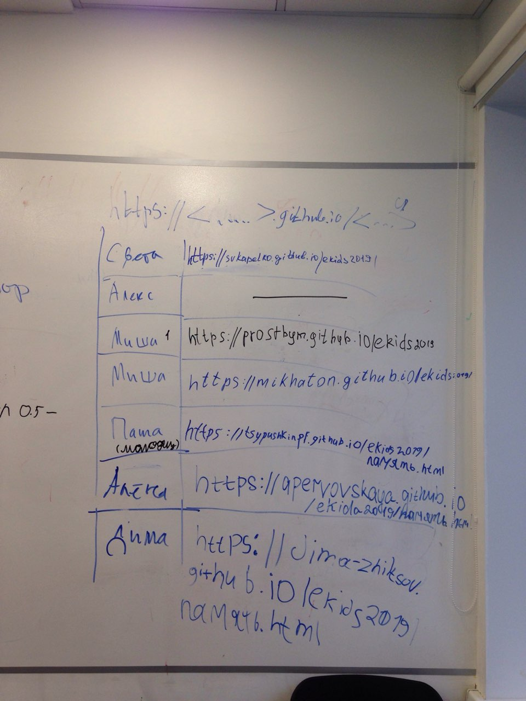
Conclusion
On the one hand, we had significant success:
- the tool worked as unpretentiously as expected;
- the concept of sequences was easily understood.
On the other hand, we had an evident failure:
- the tool wasn't friendly to students without JavaScript knowledge, i.e., everyone;
- the teaching program has been stuck most of the time.
That's why I'll try to answer the following questions when teaching in 2020:
- Will another language (Python, Lua) be simpler to explain and work with?
- Is it possible to hide Git inside the tool so that one could save the game to Git without leaving the tool?
- Is it possible to create API as declarative as SwiftUI?
- How to explain variables and arrays?
I'll share answers to these and other questions next year ;)
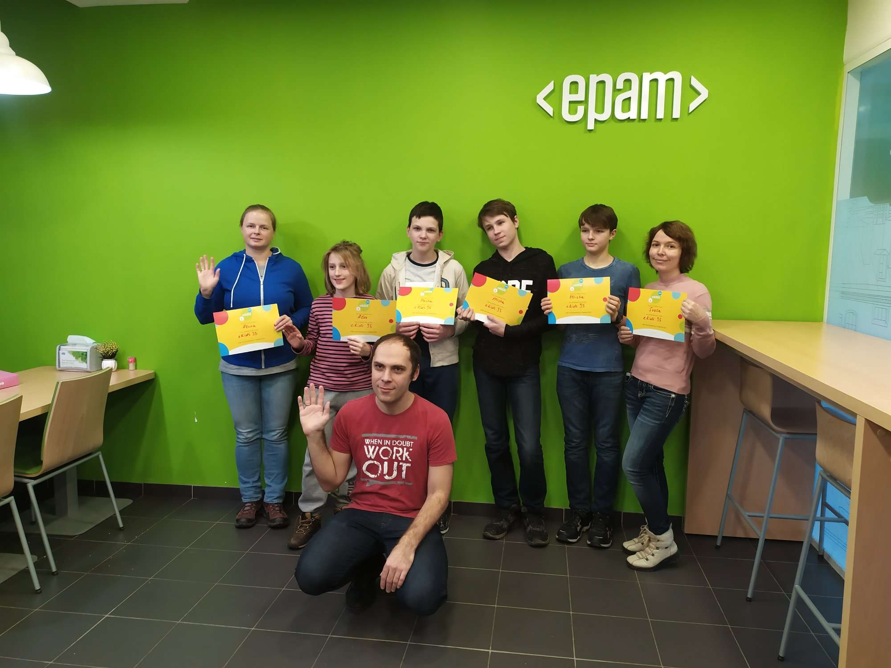